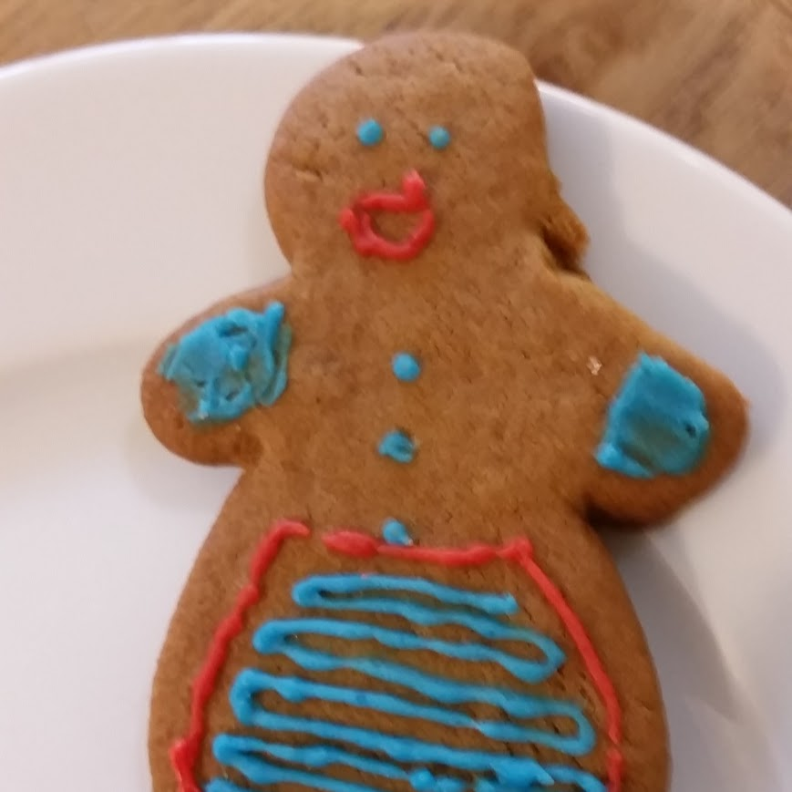

Recipes
Apple Pie
Ingredients
- 1kg Apples
- 140g Sugar
- 1/2 tsp Cinnamon
- 3 tbsp Plain Flour
- 225g Butter
- 50g Sugar
- 2 Eggs
- 350g Plain Flour
For the filling:
For the pastry:
Method
- Put a layer of paper towels on a large baking sheet. Quarter, core, peel and slice the apples about 5mm thick and lay evenly on the baking sheet. Put paper towels on top and set aside while you make and chill the pastry.
- For the pastry, beat the butter and sugar in a large bowl until just mixed. Break in a whole egg and a yolk (keep the white for glazing later). Beat together for just under 1 min – it will look a bit like scrambled egg. Now work in the flour with a wooden spoon, a third at a time, until it’s beginning to clump up, then finish gathering it together with your hands. Gently work the dough into a ball, wrap in cling film, and chill for 45 mins. Now mix the 140g/5oz sugar, the cinnamon and flour for the filling in a bowl that is large enough to take the apples later.
- After the pastry has chilled, heat the oven to 190C/fan 170C/gas 5. Lightly beat the egg white with a fork. Cut off a third of the pastry and keep it wrapped while you roll out the rest, and use this to line a pie tin – 20-22cm round and 4cm deep – leaving a slight overhang. Roll the remaining third to a circle about 28cm in diameter. Pat the apples dry with kitchen paper, and tip them into the bowl with the cinnamon-sugar mix. Give a quick mix with your hands and immediately pile high into the pastry-lined tin.
- Brush a little water around the pastry rim and lay the pastry lid over the apples pressing the edges together to seal. Trim the edge with a sharp knife and make 5 little slashes on top of the lid for the steam to escape. (Can be frozen at this stage.) Brush it all with the egg white and sprinkle with caster sugar. Bake for 40-45 mins, until golden, then remove and let it sit for 5-10 mins. Sprinkle with more sugar and serve while still warm from the oven.

Biscuits
Ingredients
- 200g Plain Flour, plus extra
- 200g Wholemeal Flour
- 100g Ground Almonds
- 250g Caster Sugar
- 250g Softened Butter
- 1 Egg
- 1tsp Vanilla Extract
- Preheat oven to 180°C. Grease and line two (you may need three, or just do multiple batches) baking trays
- Cream butter and sugar
- Beat in egg and vanilla
- Sieve in ground almonds, then add (without sieving) flours
- Mix thoroughly and roll out on to flour-dusted surface
- Cut in to shapes and place on to baking trays.
- Bake for 15-20 minutes, rotating trays half way through
Lasagna
Ingredients
- 800g Chopped Tomatoes
- 2tbsp Olive Oil
- 1 Chopped Onion
- 1 Chopped Carrot
- 1 Chopped Celery
- 1 Crushed Garlic Clove
- 1 Bay Leaf
- 250ml Milk
- 1 Clove
- 25g Butter
- 25g Plain Flour
- 750g Beef Mince
- 300g Lasagna Sheets
- 200ml Hot Beef Stock
- 125g Ball Mozzarella
- 90g Prosciutto
- A little Nutmeg
- 2 tbsp Olive Oil
For the Tomato Sauce
For the White Sauce
For the Lasagna
For the Tomato Sauce
- Heat the oil in a pan and add the vegetables and bay leaf. Stir in some salt. Gently cook for 10-15 mins until the veg is tender. Stir in the tomatoes and 150ml water. Simmer very gently for 30 mins until the sauce has reduced by two-thirds and is very thick. (If you have doubled or tripled the quantities, this may take up to 1 hr.)
- Stir occasionally, particularly towards the end of the cooking time, so that the sauce doesn’t catch on the bottom. If you like your sauce a little thinner, add a splash of water.
For the White Sauce
- Gently bring the milk to the boil in a small saucepan with the onion, studded with the bay and cloves (step 1, above). Turn off the heat and leave to infuse for 20 mins.
- Melt the butter in another saucepan, then add the flour. Stir continuously until a paste forms (step 2) – this is called a roux. Continue cooking for 2 mins.
- Remove the onion, bay and cloves from the milk with a slotted spoon and discard. Add the infused milk to the roux gradually, stirring as you go, until you get a smooth sauce (step 3). Cook for 5-10 mins, stirring continuously, until the sauce has thickened. Season to taste.
For the Lasagna
- To make the meat sauce, heat the oil in a frying pan and cook the beef in two batches for about 10 mins until browned all over. Finely chop 4 slices of prosciutto, then stir through the meat mixture.
- Pour over tomato sauce and stock, add the nutmeg, then season. Bring up to the boil, then simmer for 30 mins until the sauce looks rich.
- Heat oven to 180C/fan/160C/gas 4. Lightly oil an ovenproof dish (about 30 x 20cm). Spoon one third of the meat sauce into the dish, then cover with lasagne sheets. Drizzle over about half of the white sauce.
- Repeat until you have 3 layers of pasta. Cover with the remaining white sauce, making sure you can’t see any pasta poking through.
- Scatter the mozzarella over the top. Arrange the rest of the prosciutto on top. Bake for 45 mins until the top is bubbling and lightly browned.